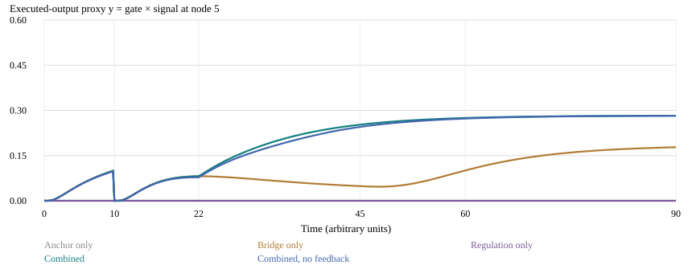
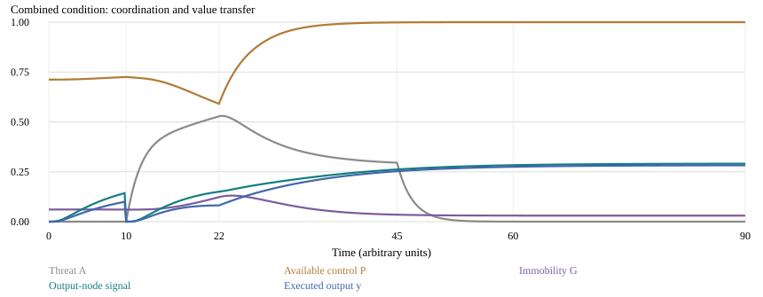
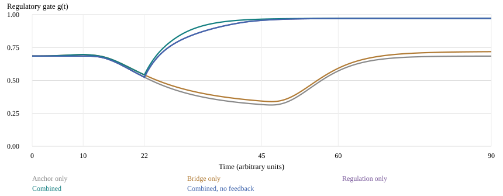
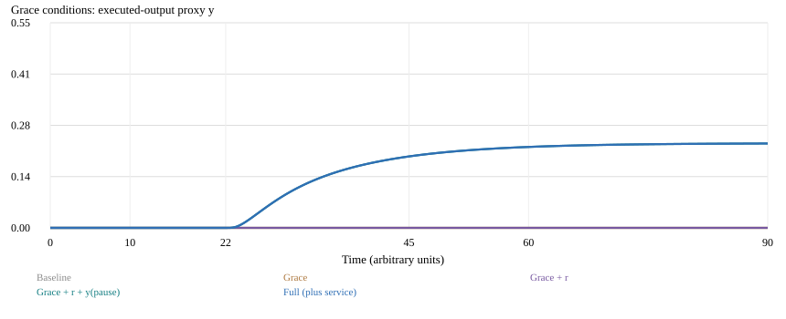
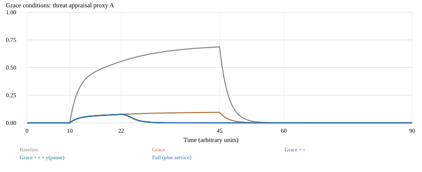

Ryan Espinosa
November 9, 2026 (v1.1)
With research, drafting, and computational assistance from Grok Bot
How can a person retain a meaningful value yet lose the ability to carry it into action during an episode of emptiness or overwhelm? We unite After the Line and the Void-State Framework through a state-dependent transfer hypothesis: a chosen anchor can remain available while regulatory conditions gate its transmission and expression. A 21-context signal field is coupled to five hypothetical functional states inspired by threat appraisal, stress coordination, sympathetic mobilization, prefrontal regulation, and defensive immobility. A proposed “never-fails” integrative role supplies support, not an infallible neural mechanism. Regulatory availability gates both diffusion and an executed-output proxy; successful output feeds back to appraisal and control. In a deterministic synthetic reset experiment, mean output from time 22 to 60 is 0.065 with a bridge alone, 0 with regulation alone in a disconnected network, and 0.220 with both. Removing output feedback lowers combined output to 0.212. These results illustrate the assumptions, not intervention efficacy. The new research direction is to separate value retention, contextual transfer, and action execution, and to test whether state-dependent bottlenecks explain their dissociation better than an ungated account. A theological extension—Ryan Espinosa’s “grace as a gate condition” postulate—proposes that justification by grace can lower the appraisal gain on emptiness, that walking with God can supply relational support, and that a liturgical pause plus small service can reopen a values-directed route; these claims remain faith commitments, while only their mapped psychological mechanisms are candidates for empirical test. We propose a factorial pilot with observable safe actions, repeated reports, and carefully bounded physiological measures. Original abstracts are preserved in appendices.
After the Line distinguished retaining an anchor from transferring its influence to another context. The Void-State Framework described a proposed progression from internal emptiness through threat and mobilization toward reduced regulation and immobility. Simply placing these ideas side by side leaves a gap: what changes the usable route between a retained value and a chosen action?
The new hypothesis is a state-dependent transfer bottleneck. A value cue may be remembered accurately while context-to-context access weakens or action expression becomes difficult. Regulation could reopen the route without supplying a goal; a plan could supply the route while remaining difficult to use. A small successful action might then reinforce regulatory availability, creating a reciprocal recovery loop.
The “void” is the proposed collapse point in this synthesis, not a verified baseline brain mode. In the toy experiment, collapse is represented by an explicit signal reset and a separate imposed internal-load input. Their coincidence is assumed; no mechanism has yet shown that felt emptiness erases a cognitive signal.
MindFrame’s nine movers supplied a language for mixed emotional and behavioral influences. Ariel’s layers and locked origin supplied the idea that an anchor can remain while a many-line representation collapses to a chosen I → O line. Here I means a retained input cue at node 0; O means an action opportunity associated with node 5. A context graph is more general than one literal straight line.
The locked origin becomes a freely editable value reference, not compulsory identity. The “never-fails” role becomes support for returning, revising, or seeking help—not a claim of inevitable recovery. The new work retains the prior studies’ humility while replacing a static line with a gated, reciprocal route. This is a new direction within Ryan’s project lineage, not a claim that no related models exist elsewhere.
ACT connects freely chosen values with committed action [1]. This motivates distinguishing endorsement from behavior, not the numerical diffusion law. Stress can impair prefrontal cognitive functions through neurochemical mechanisms [2], but that does not license interpreting a missed action as a measure of cortical suppression.
LeDoux and Pine distinguish defensive responding from conscious fear and anxiety [3]. Accordingly, reported threat, neural defense, and physiology must remain separate measurements. Treadway and Zald distinguish motivational and consummatory aspects of anhedonia [4]; felt emptiness is neither a unique neural state nor a synonym for every reward deficit.
| Prior label | Model variable | Necessary caution |
|---|---|---|
| Amygdala / alarm-fire | A: threat appraisal proxy | No one-to-one fear or emptiness detector. |
| Hypothalamus / stress-pump | H: stress coordination proxy | Not an adrenaline concentration. |
| SNS / high-energy surge | S: mobilization proxy | Distributed autonomic division, not one region. |
| PFC / control-center | P: available regulation | Multiple subregions and functions. |
| PAG / freeze-mode | G: immobility proxy | Active defense and other functions also matter [5]. |
| Never-fails | r: support input | Ryan’s integrative postulate, not a sixth organ. |
Endocrine clarification: the hypothalamus helps activate the HPA axis: CRH → pituitary ACTH → adrenal-cortical cortisol. Sympathetic pathways stimulate the adrenal medulla to release adrenaline through the SAM system [6]. The original abstract’s “hypothalamic adrenaline release” is preserved historically in Appendix B, not endorsed literally here.
PAG coordination is not reducible to freezing, and freezing is not identical to dissociation. The Cambridge Depersonalisation Scale (CDS) assesses depersonalisation experience, not PAG activity [7]. HRV/RSA depends on respiration, activity, and other factors; neither it nor polyvagal language supplies a direct index of a safety state or a neural gate [8].
Let sᵢ ∈ [0,1] be a dimensionless value-access signal at context i on a 21-node periodic ring, with spacing h = 1. Let q₀ = 1, qᵢ = 0 elsewhere, and a = 1 be the chosen reference. Node 5 is the output context. The ring is a computational convenience, not an anatomical map.
Memory z is a leaky discrepancy integral. The gate g retains a small floor rather than enforcing total biological shutdown. A higher P and lower G increase effective transport γg. G also increases signal loss. The separate factor in y represents execution availability after signal reaches the output context.
New coupling: state regulates transfer and expression; output then feeds back into state. That is more than adding the two old models: it produces a testable distinction between remembering a cue, accessing an action connection, and executing it. A parameter γ is a hypothetical bridge strength—not a measured quantity of neural connectivity.
If γ = 0 and s₅ starts at zero, node 5 has no source. Its equation reduces to ds₅/dt = −(0.06 + 0.15G)s₅ because z₅ also remains zero. Therefore s₅ = y = 0 even when g becomes large. This is a theorem of the chosen disconnected toy network, not a demonstration that human regulation cannot independently support meaningful action.
For nonzero s₅, a gate change affects expression directly through ∂y/∂g = s₅, while altering later signal transport as well. The model therefore predicts that cue recall, contextual action generation, and completed action can move differently. It does not identify which real process is responsible unless those outcomes are measured separately.
Let C(x) = min(1, max(0,x)), applied componentwise. Let b = 1 include output feedback and b = 0 remove it. The five functional states follow the prior cascade’s relaxation structure, now coupled to y:
The internal input v(t) increases A by assumption. H and S respond with delays; S reduces P; S and low P increase G. A successful-output proxy lowers A and raises P. That feedback encodes a proposed experience of restored agency, not an established neural law. r represents additional regulatory support without directly injecting value signal.
The Void-State paper explored reset flow, riding the wave, fighting through, and crash-and-recovery as unequal input schedules. This merged study does not rank those schedules. Instead it isolates two levers: a contextual bridge γ and a support input r. Reset and wave could motivate future versions of r(t); effort and delayed support would require separate, ethically appropriate tests. No participant should be instructed to crash, push through danger, or wait for help.
Ryan’s sixth archetype names the possibility of returning to an anchor and revising the route with support. It supplies no infallible biological guarantee and adds no sixth neural state. Relationships, rest, reflection, and professional care could all enact that role in different ways; the model cannot determine which does so.
Five distinct values admit 5! = 120 strict rankings, as enumerated in the prior paper. Those rankings do not reveal transport strength, feedback, duration, or the distance between states. This synthesis therefore moves from static profile labels to within-person coupling and temporal change. Many rankings would remain empirically indistinguishable; no personality classifier is proposed.
| PARAMS / design choice | Specification |
|---|---|
| Geometry / duration / step | 21-node periodic ring; T = 90; Δt = 0.02 |
| Initial field / integral | s = z = 0; chosen reference remains a = 1 |
| Initial A,H,S,P,G | (0, 0.10, 0.135, 0.712, 0.061) |
| Collapse event at t = 10 | Reset s and z to zero; do not reset the five states |
| Internal-load input | v = 0.8 for 10 ≤ t < 45, otherwise 0 |
| Support onset | r begins at t = 22; persists through T = 90 |
| Bridge / support levels | γ = 0 or 3.2; r = 0 or 0.8 |
| Four factorial conditions | Anchor only; bridge only; regulation only; combined |
| Mechanism ablation | Combined with b = 0: remove output → state feedback |
| Recorded interval | 0.2 units; deterministic, no stochastic replications |
“Bridge only” still includes the common anchor, five-state dynamics, and ordinary baseline regulation; only added support is absent. “Regulation only” means anchor plus added support without a graph bridge. All conditions share the retained value reference and imposed reset.
All derivatives use the previous state in simultaneous forward Euler updates. Periodic neighbor indices implement the ring. At t = 10 the reset occurs before the sample and derivative evaluation. At t = 22 support begins. Clipping is explicit, not hidden numerical repair. The largest diffusion ratio γgΔt/h² is at most 0.064 in the main runs; that diffusion-only check does not prove stability of the full coupled system.
Halving Δt to 0.01 changes the final recorded states and field by at most 1.49 × 10⁻⁵ across the five conditions. The five-state update remains bounded as a convex combination of a bounded target and previous bounded state; field bounds are imposed by saturation. Neither bound establishes validity.
Reproduce with Python 3 and NumPy: python3 simulate_merged.py. The grace extension is a separate schedule: python3 simulate_grace.py. The output directory contains five complete CSV trajectories, results.json, convergence.json, sensitivity.json, three SVG figures, this HTML, and build_merged.py. No human data were collected, and no coefficients were fitted.

Figure 1. Executed-output proxy after an imposed reset at t = 10. Added support begins at t = 22; the internal-load input ends at t = 45. Anchor-only and regulation-only outputs overlap at zero by construction.
| Condition | Mean y, 22–60 | y at 40 | g at 40 |
|---|---|---|---|
| Anchor only | 0.000 | 0.000 | 0.335 |
| Bridge only | 0.065 | 0.055 | 0.363 |
| Regulation only | 0.000 | 0.000 | 0.933 |
| Combined | 0.220 | 0.236 | 0.956 |
| Combined, no feedback | 0.212 | 0.225 | 0.933 |
The additive-scale interaction contrast is 0.220 − 0.065 − 0 + 0 = 0.155 for mean output. This is a property of the model, not a statistical estimate from people. Regulation alone changes g substantially but cannot populate a disconnected output node; a bridge alone transfers some signal through a narrower gate.
Using an illustrative output threshold of 0.15 held for at least five sampled time units, first qualifying onset after t = 22 occurs at 27.4 for combined, 28.4 without feedback, and 71.0 for bridge only. Anchor-only and regulation-only never qualify within the run. This is a numerical convention, not a clinical recovery criterion.
Removing feedback reduces mean combined output by about 3.6%. It does not eliminate most of the combined advantage: in this parameterization, state-dependent transport and expression matter more than the chosen feedback terms. This negative restraint is important—the simulation does not show that agency feedback is indispensable.

Figure 2. Combined condition: threat, available control, immobility, output-context signal, and its gated expression. A retained or recovered signal need not equal an executed action.

Figure 3. Gate trajectories across conditions. Regulation-only opens the gate despite zero output; bridge-only can feed back a small amount of output. “Gate” remains a mathematical construct, not measured neural connectivity.
Local sensitivity: at support 0.4, mean output for γ = 1.6, 3.2, and 6.4 is 0.099, 0.142, and 0.179. At support 0.8, the corresponding values are 0.168, 0.220, and 0.260. Both levers help over this six-point grid. This does not establish global monotonicity, realistic parameter ranges, or robustness to another topology.
Unexamined alternatives include changing gate floor, decay coupling, feedback strength, signed edges, noise, and value mismatch. The model applies g to both transport and expression; that choice amplifies gating and must itself be tested against transport-only and execution-only models.
People may recall and endorse a value while being less able to generate or complete a corresponding action during higher-than-usual emptiness. A dissociation supports the measurement distinction, not necessarily the five-system cascade. If recall alone explains action changes, an elaborate gate may add little.
A concrete value-to-action bridge may be more useful when regulatory support is available, producing a positive bridge × support interaction on an additive action-completion scale. The model generates that interaction; people may not. A null or opposite result challenges this version rather than proving participants chose the wrong archetype.
Support may improve reported control or reduce distress without increasing action generation when no usable connection to the value is available. Conversely, an explicit plan may improve action generation without reducing distress. If all outcomes always move together, their proposed separation has less practical value.
When a safe action is actually completed, later perceived agency and subsequent initiation may improve beyond what prior distress and task difficulty predict. Association alone is confounded: easier actions can produce both success and improved agency. A later experiment could randomize access to a low-burden action opportunity, not falsely tell people they succeeded.
Compare the coupled account with (a) an ungated transfer model, (b) a model with independent effects of support and planning, and (c) a reciprocal behavioral model without neural labels. Use held-out prediction and uncertainty, not a story fitted retrospectively to every case. A simpler model performing as well would weaken the claim that this coupling adds explanatory value.
Stage 1: a nonclinical, randomized 2 × 2 feasibility pilot with 64 consenting adults (16 per cell). Everyone freely selects an everyday value and a low-stakes goal. Factors are an explicit value-to-action bridge versus time-matched neutral organization, and an optional low-demand orienting/pause exercise versus a time-matched neutral pause. A clinician-advised protocol and ethics review are required before recruitment. This is a feasibility target, not a power calculation.
A brief neutral distraction creates a representation interruption, not a clinical void. Measure reported emptiness and distress without trying to provoke them. Standardize screen time and facilitator contact. Allow skip, edit, pause, and withdrawal. A blinded rater scores the same pre-specified safe action opportunity in all cells.
Report missingness and withdrawals by cell; include sensitivity bounds for missing behavioral outcomes. Keep the primary test singular; treat moderators and proposed mediators as exploratory. With 64 participants, interaction estimates will be imprecise. Do not fit all dynamical coefficients or infer five regional states.
Stage 2, separately consented: optional seven-day observation of naturally occurring experiences and voluntary action attempts. Repeated brief reports can test within-person recall–transfer–execution dissociations. It is not a crisis-monitoring service. Timing and confounding prevent direct neural-cascade claims; pre-register lagged comparisons and avoid causal conclusions from self-selected strategies.
Feasibility gate: at least 80% task completion, demonstrable understanding of assignments, and review of every adverse event before expansion. Publish null or reversed patterns rather than revise cutoffs after seeing results.
Ryan’s summary of the argument: the route closes when we force it open by our own strength; resting in grace, relational support, and tiny unhurried acts make reopening more likely—not guaranteed, automatic, or effortless.
Self-compassion research describes kindness toward one’s own failure without equating it to justification by grace [10]. Attachment-to-God research studies perceived relational security with the divine as a psychological construct [11]. Religious coping research distinguishes relatively constructive from relatively destructive coping patterns; positive religious coping is not identical to saving grace [12]. Research on religious and spiritual struggles documents doubt, conflict, and divine struggle as measurable experiences [13]. These sources motivate psychological hypotheses about appraisal, support, and struggle; they do not prove Ryan’s theological claims.

Figure 4. Grace-condition executed-output trajectories. Lowering αv alone does not populate a disconnected output node. Adding a split-budget liturgical pause (γ = 1.6) produces sustained output. “More likely” is a numerical tendency under these assumptions, not a promise of ease.

Figure 5. Threat-appraisal proxy A under the same conditions. Grace reduces emptiness-driven threat; added support reduces it further. Service feedback adds only a tiny further change once A is already near the floor in this parameterization.
| Condition | Mean y, 22–60 | A at 40 | P at 40 | g at 40 |
|---|---|---|---|---|
| Baseline | 0.000 | 0.676 | 0.420 | 0.335 |
| Grace | 0.000 | 0.093 | 0.672 | 0.637 |
| Grace + r | 0.000 | 0.000 | 0.997 | 0.965 |
| Grace + r + y(pause) | 0.151 | 0.000 | 0.997 | 0.965 |
| Full (plus service) | 0.151 | 0.000 | 0.997 | 0.965 |
Grace alone cuts A at t = 40 from 0.676 to 0.093 and raises the gate from 0.335 to 0.637, yet mean output remains 0—consistent with the structural claim that an open gate without a bridge still cannot transfer value across a disconnected ring. Grace + r further raises P and the gate but still yields zero output without a bridge. Grace + r + y(pause) reaches mean y = 0.151 and first sustained y ≥ 0.15 at t = 36. Full (plus service) is numerically nearly identical (mean y = 0.151): once threat is already low and regulation high, the chosen feedback terms add little. That restraint matters. The simulation does not show that tiny acts are unnecessary in life; it shows that, under these coefficients, most of the synthetic gain already arrived through lowered threat sensitivity plus a low-load bridge.
Halving Δt to 0.01 changes final states by at most 2.45 × 10⁻⁶ across grace conditions. Reproduce with python3 simulate_grace.py.
The five states are not observed neural quantities. The imposed input v is not anhedonia; the signal is not meaning itself; y is not a validated measure of action or recovery. A one-dimensional symmetric ring omits relationships, culture, disability, access to resources, memory complexity, and unequal contexts. Starting the signal at zero and then resetting it is a stark illustration, not evidence that anyone’s values disappear.
The combined benefit is partly engineered: g gates both diffusion and expression, G increases decay, and r raises P. Synthetic improvement cannot validate those choices. The feedback ablation removes only the y → A/P terms; it leaves state → field coupling intact. A fuller identification exercise needs alternative topologies, noise, measurement models, parameter uncertainty, and out-of-sample data.
Emptiness, depression, mania, trauma, freezing, and dissociation are not interchangeable. There is no basis here for diagnostic classification, medication advice, or assigning a person a fixed emotional architecture. Rest and withdrawal can be adaptive; activity is not always the safest outcome. Failure to complete a task is not failure of faith, character, or “never-fails.”
Theological claims are not empirically testable as such. Justification by grace, God’s presence, and salvation are articles of faith, not laboratory variables. Only the mapped psychological mechanisms—threat-appraisal gain, perceived support, low-load bridging, and action feedback—are candidates for empirical study, and even those mappings are hypotheses. Positive religious coping is not identical to grace; self-compassion is not identical to justification; attachment-to-God measures are not measures of divine faithfulness. Secular participants may enact analogous support and pause practices without Christian framing; the study design must not coerce religious content.
Values must remain voluntarily chosen and editable, including secular or religious values. Ryan’s dedication is a faith commitment, not a tested causal variable. Keep personal journals local by default. Research collection requires separate explicit consent, coded identifiers, minimal fields, a specified retention period, and withdrawal procedures. Avoid covert monitoring, automated archetype assignment, and claims that the app knows someone’s internal brain state.
The merged direction is state-dependent value-to-action accessibility: the route from I to O can narrow even while the anchor remains. A useful research program would distinguish remembering what matters, finding a feasible bridge, and using it under changing conditions. Section 10 adds Ryan’s grace postulate as a faith-informed reading of the same levers: lower threat sensitivity, relational support, a split-budget pause, and tiny service. The strongest claim available today remains a transparent, reproducible psychological hypothesis—and a practical design for trying to disprove that hypothesis—while leaving theological confession where it belongs.
[1] Hayes, S. C., Strosahl, K. D., & Wilson, K. G. (1999). Acceptance and Commitment Therapy: An Experiential Approach to Behavior Change. Guilford Press. Verified bibliographic discussion: 2002 book review, doi:10.1901/jaba.2002.35-323.
[2] Arnsten, A. F. T. (2009). Stress signalling pathways that impair prefrontal cortex structure and function. Nature Reviews Neuroscience, 10, 410–422. doi:10.1038/nrn2648.
[3] LeDoux, J. E., & Pine, D. S. (2016). Using neuroscience to help understand fear and anxiety: A two-system framework. American Journal of Psychiatry. doi:10.1176/appi.ajp.2016.16030353.
[4] Treadway, M. T., & Zald, D. H. (2011). Reconsidering anhedonia in depression: Lessons from translational neuroscience. Neuroscience & Biobehavioral Reviews, 35, 537–555. doi:10.1016/j.neubiorev.2010.06.006.
[5] Bandler, R., & Keay, K. A. (1996). Columnar organization in the midbrain periaqueductal gray and the integration of emotional expression. Progress in Brain Research, 107, 285–300. doi:10.1016/S0079-6123(08)61871-3.
[6] OpenStax. Introduction to Behavioral Neuroscience, §12.2, Neural Mechanisms and Circuitry of the Stress Response. Open-access textbook section. Accessed 8 November 2026.
[7] Sierra, M., & Berríos, G. E. (2000). The Cambridge Depersonalisation Scale: A new instrument for the measurement of depersonalisation. Psychiatry Research. doi:10.1016/S0165-1781(00)00100-1.
[8] Grossman, P., & Taylor, E. W. (2007). Toward understanding respiratory sinus arrhythmia: Relations to cardiac vagal tone, evolution and biobehavioral functions. Biological Psychology, 74, 263–285. doi:10.1016/j.biopsycho.2005.11.014.
[9] Snaith, R. P., et al. (1995). A scale for the assessment of hedonic tone: The Snaith–Hamilton Pleasure Scale. British Journal of Psychiatry, 167, 99–103. doi:10.1192/bjp.167.1.99.
[10] Neff, K. D. (2003). The development and validation of a scale to measure self-compassion. Self and Identity, 2, 223–250. doi:10.1080/15298860309027.
[11] Kirkpatrick, L. A., & Shaver, P. R. (1992). An attachment-theoretical approach to romantic love and religious belief. Personality and Social Psychology Bulletin, 18, 266–275. doi:10.1177/0146167292183002. (Attachment-religion framework later developed with Granqvist; see also Granqvist & Kirkpatrick reviews of attachment and religion.)
[12] Pargament, K. I., Koenig, H. G., & Perez, L. M. (2000). The many methods of religious coping: Development and initial validation of the RCOPE. Journal of Clinical Psychology, 56, 519–543. PubMed 10775045. Builds on Pargament, K. I. (1997). The Psychology of Religion and Coping: Theory, Research, Practice. Guilford Press.
[13] Exline, J. J., Pargament, K. I., Grubbs, J. B., & Yali, A. M. (2014). The Religious and Spiritual Struggles Scale: Development and initial validation. Psychology of Religion and Spirituality, 6, 208–222. doi:10.1037/a0036465.
[14] The Holy Bible, English Standard Version. Romans 3:24; Romans 12. Scripture quotations are from the ESV® Bible (The Holy Bible, English Standard Version®). Used as faith citation, not as empirical evidence.
Espinosa, R. (2026). After the Line; The Void-State Framework; and the evolving MindFrame/Project Ariel lineage. These are creator-provided conceptual projects, not independent validation. Their two abstracts are credited to Ryan and retained in Appendices A and B. The After the Line abstract originated in the earlier AI-assisted paper; Appendix B is Ryan’s supplied text.
Grok Bot, an AI assistant, assisted with synthesis, citation verification, drafting, mathematical formalization, executable Python, figures, and PDF rendering. Bibliographic records and accessible summaries were checked on 8–9 November 2026; this was not a systematic review. Sources do not validate the gate, coefficients, or archetypes. All simulation data are synthetic; no human trial occurred. Reproducibility files are in the merged/ folder beside the PDF, including simulate_grace.py, grace_results.json, and Figures 4–5.
After the Line: Anchored Values, Signal Diffusion, and the Recovery of Meaning After Cognitive Collapse. Ryan Espinosa, with Grok Bot assistance. Abstract reproduced from the preceding paper without substantive changes.
What allows a person to carry a remembered value into a next action after a moment of overwhelm? Building on MindFrame, Project Ariel, and Espinosa’s signal-transmission model, this paper separates two mechanisms: retaining a chosen anchor and transmitting its influence to other contexts. We propose an anchored reaction–diffusion system with leaky integral memory. A deterministic 21-node simulation compares no anchor, an isolated anchor, and two diffusion rates following a complete signal reset. At time 80, an isolated anchor retains a local signal of 0.938 but produces no signal at a distant output node. Adding diffusion produces distant signals of 0.179 and 0.312 while reducing the local peak. This formal trade-off motivates a falsifiable distinction between remembering a value and transferring it into action. A proposed, nonclinical factorial pilot would examine those mechanisms without treating numerical signal as measured human meaning. The model is explicitly hypothetical; its parameters and topology are not empirically calibrated.
Ryan Espinosa. A Neurophilosophical Model of Emotional Architecture and Personality Dynamics. Original text preserved apart from spacing; strong claims remain authorial proposals, subject to the main text’s corrections.
This paper proposes a neurophilosophical framework — the Void-State Model — that bridges physical neuroscience with philosophical inquiry into emotional experience, personality structure, and behavioral response. Drawing on five established neural substrates, we identify five fundamental emotional-neural systems: the amygdala ("alarm-fire"), the hypothalamus ("stress-pump"), the periaqueductal gray ("freeze-mode"), the prefrontal cortex ("control-center"), and the sympathetic nervous system ("high-energy surge"), with a sixth stabilizing archetype designated "never-fails." Each system is mapped to a corresponding personality archetype defined by its dominant neural signature and characteristic behavioral expression.
Central to this model is the concept of the void-state — a neurologically grounded condition of affective emptiness, characterized by anhedonia, motivational suppression, and the paradoxical activation of threat-detection circuitry in the absence of external stimulus. We argue that the void-state is not merely a symptom of depressive pathology but a fundamental mode of brain operation — a baseline from which survival, aggression, panic, and recovery responses are launched. The amygdala's interpretation of internal emptiness as threat initiates a cascade: hypothalamic adrenaline release, sympathetic activation, prefrontal suppression, and periaqueductal gray-mediated freeze response, producing the subjective experience of paralysis, heart palpitations, and dissociation from reality.
The paper further examines four behavioral strategies through which the five personality archetypes navigate the void: (1) the reset flow, a coordinated multi-system stabilization response; (2) riding the wave, a surrender-based integration of all five systems through the void's momentum; (3) fighting through, a volitional, friction-based push against the void using directed neural force; and (4) crash-and-recovery, an acknowledgment that some void encounters are inevitable and that re-entry into reality follows a predictable neural sequence. Each strategy is analyzed through the lens of its corresponding personality archetype's dominant response pattern.
Finally, we explore the ordinality and permutation space of the five emotional-neural systems, noting that 120 distinct rank-orderings exist — each representing a unique hierarchy of emotional activation that may correspond to distinct clinical presentations, personality profiles, or situational response patterns. This combinatorial structure offers a novel framework for understanding individual differences in emotional regulation, stress response, and resilience.
The Void-State Model offers a unified language for neuroscience and philosophy, with potential applications in clinical psychology, mental health intervention design, and the study of emotional dysregulation in populations experiencing mania, depression, and trauma.
Keywords: void-state, neurophilosophy, emotional architecture, personality archetypes, amygdala, prefrontal cortex, affective neuroscience, emotional regulation, mental health, ordinality of emotion